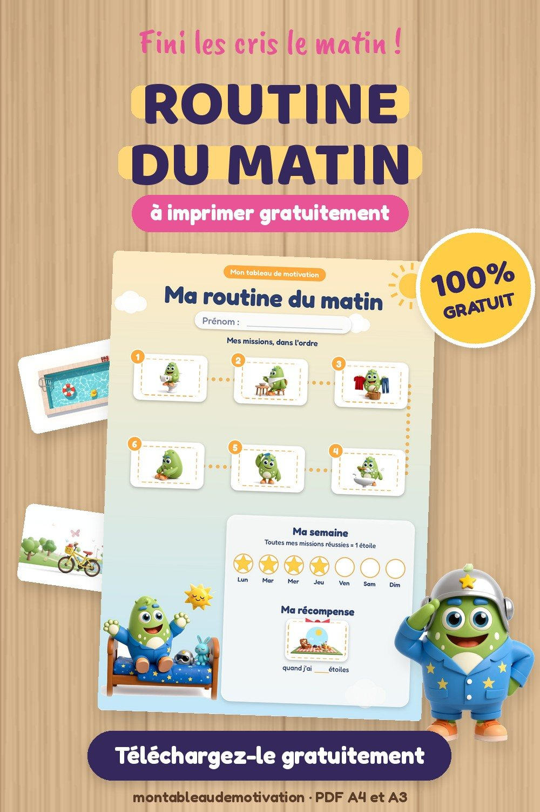
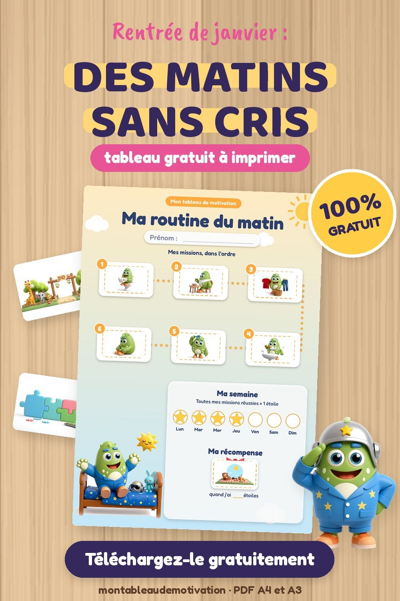
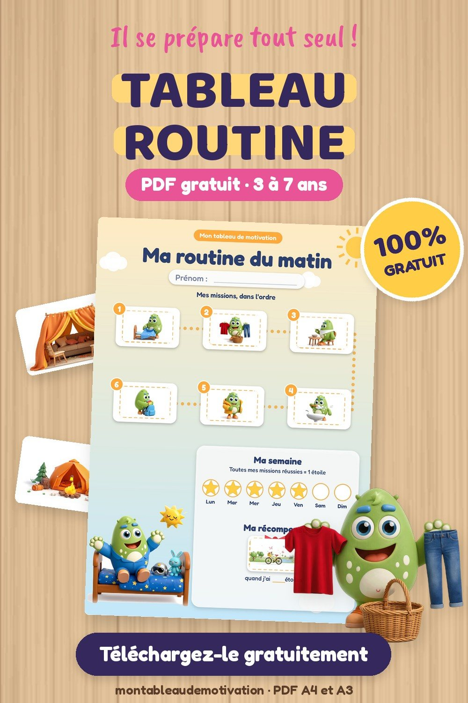
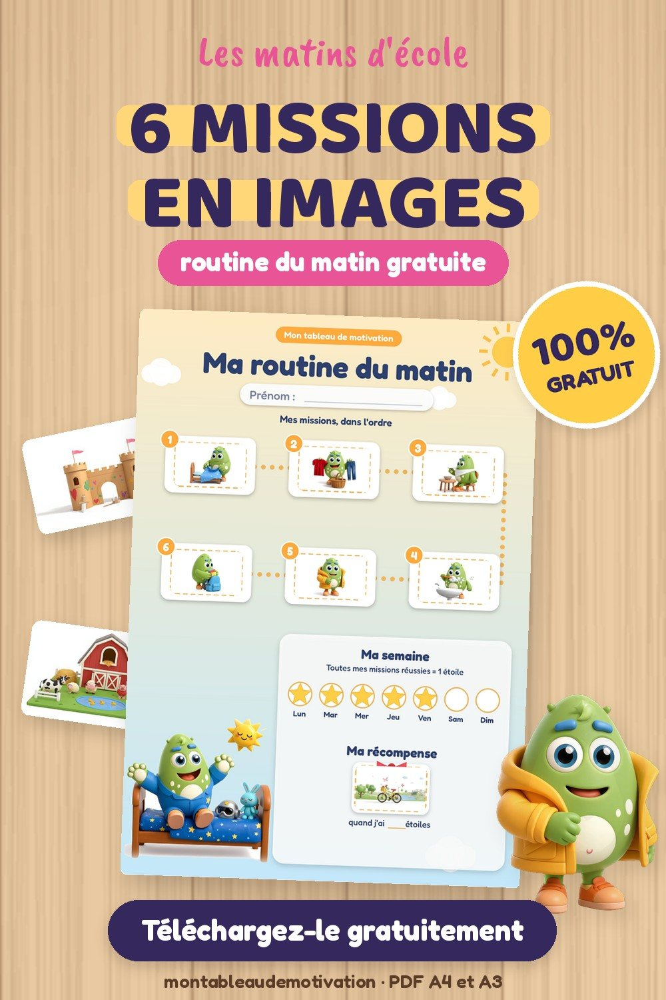
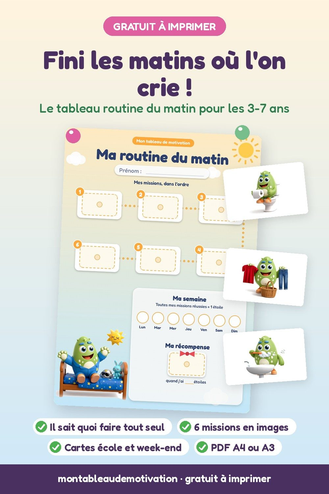
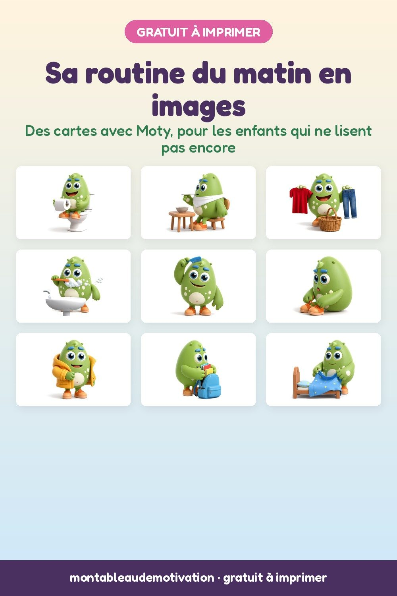
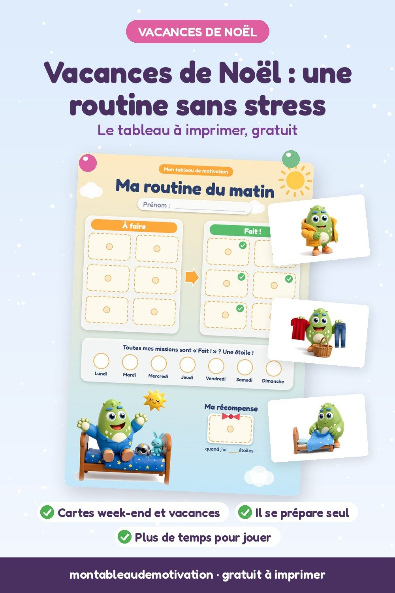
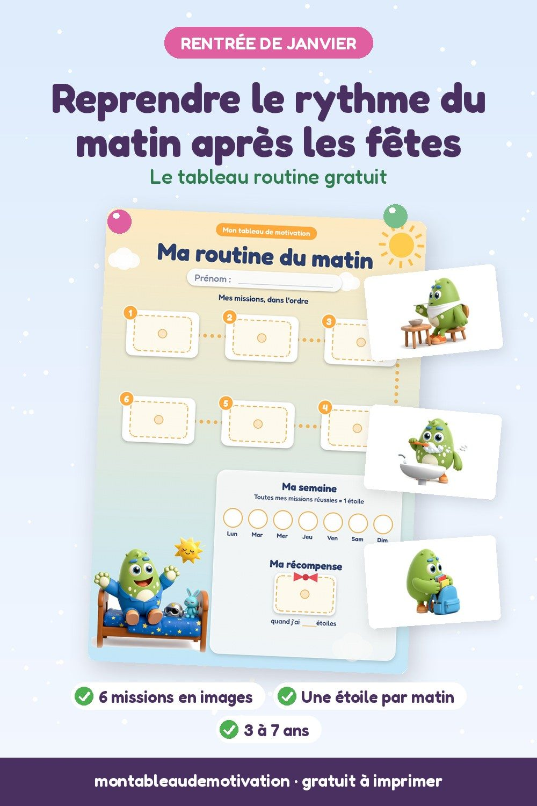

Routine du matin · 3 à 7 ans
Le chemin des missions
Les 6 missions dans l'ordre, de 1 à 6. Tout est fait ? Une étoile pour la journée.
Télécharger le PDF (A4) ou en grand format A3 Mon Tableau de Motivation
Mon Tableau de Motivation
Des cartes en images pour que votre enfant sache quoi faire, dans quel ordre, sans que vous ayez à le répéter dix fois. Pour les 3 à 7 ans, en A4 ou en A3.
Voir les 3 tableaux du matin ↓Le matin, tout va vite. On répète « habille-toi », « tes dents », « tes chaussures »… et plus on répète, moins l'enfant écoute. Avant 7 ans, un enfant retient mal une liste dite à voix haute et ne sait pas encore lire l'heure.
Avec un tableau en images, il voit ce qui vient ensuite. Il n'attend plus qu'on lui dise : il regarde son tableau et avance tout seul. Vous passez de « dépêche-toi ! » à « qu'est-ce qui reste sur ton tableau ? ». C'est plus calme pour tout le monde, et votre enfant est fier de réussir seul.
Voici une routine simple qui marche bien pour la plupart des familles. Adaptez l'ordre à la vôtre :
Les jours d'école, on ajoute « je prends mon cartable ». Le week-end, on peut changer quelques cartes : c'est pour cela que les tableaux ci-dessous ont des cartes « tous les matins », « jours d'école » et « week-end et vacances ».
💡 Astuce : réveillez-vous 10 minutes avant votre enfant. Ces 10 minutes de calme changent souvent toute la matinée.
100 % gratuit · à imprimer à la maison
Chaque PDF contient le tableau, les cartes missions avec Moty en 3D, 64 cartes récompenses et un mode d'emploi. Choisissez la mise en page qui plaît à votre enfant.
Les 6 missions dans l'ordre, de 1 à 6. Tout est fait ? Une étoile pour la journée.
Télécharger le PDF (A4) ou en grand format A3
Une ligne par mission, une colonne par jour : une étoile à chaque mission réussie.
Télécharger le PDF (A4) ou en grand format A3
Votre enfant déplace chaque carte vers « Fait ! ». Toutes y sont ? Une étoile pour la journée.
Télécharger le PDF (A4) ou en grand format A3







Vos questions
Dès 3 ans, avec 3 ou 4 cartes en images et un parent à côté au début. Les tableaux de cette page sont pensés pour les 3 à 7 ans.
Oui, les PDF sont 100 % gratuits, sans inscription. Vous les imprimez à la maison, en A4 ou en A3.
Plastifiez le tableau et les cartes, puis collez une pastille de velcro sur chaque emplacement et au dos de chaque carte. Vous pourrez ainsi changer les cartes facilement, par exemple le week-end.
Non. Le plus simple est de donner une étoile par matin réussi, et une petite récompense au bout de la semaine. Les félicitations comptent souvent autant que la récompense.
Faites les missions avec lui pendant quelques jours, comme un jeu. Laissez-le choisir la mise en page et la récompense : un enfant suit mieux un tableau qu'il a aidé à construire.
Les histoires de Moty
Une histoire douce et rigolote pour les 3-6 ans, avec Moty, la mascotte du tableau. Avec un tableau des étoiles à la fin du livre.

Tome 1
Dans sa bouche, les microbes font la fête ! Moty devient chasseur de microbes. Avec un tableau des étoiles à la fin du livre.
📖 Voir sur AmazonSans imprimer
L'application Mon Tableau de Motivation reprend les mêmes missions, les mêmes récompenses en 3D et les mêmes 5 étoiles, sur votre téléphone et sur celui de votre enfant. 7 jours d'essai gratuit.
Les autres guides